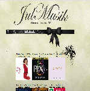

Julmusik var ett projekt jag och en till jobbade med runt jul 2014. Min arbetskamrat jobbade med det grafiska medan jag kodade produkten. På sidan kan man se top jul låtar, nya låtar samt en julkalender med nya "dagens jullåtar". Sidan stödjer även för att spela upp musiken samt att man kan logga in. Sidan är kodad i html,css,js och php. Sidan är skapad under ungerfär tre veckors arbete.
